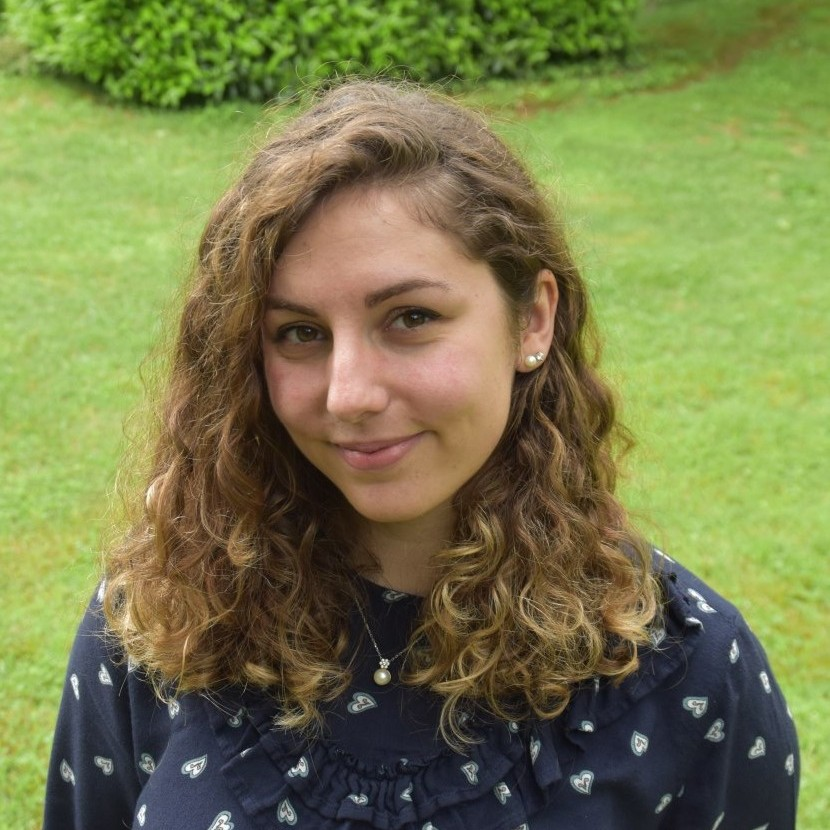

Officers
Martina Amongero (2026-2027) - Coordinator

I am Martina Amongero and I am currently a postdoctoral fellow at the Department of Economics, Social Studies, Applied Mathematics, and Statistics, Università di Torino. I obtained my Ph.D. in Pure and Applied Mathematics in 2024 at the Department of Mathematical Sciences, Politecnico di Torino, where I specialized in biostatistics with a scholarship sponsored by GSK Vaccines. My research focuses on Bayesian models for longitudinal data and Bayesian mixture models for community detection problems. I have a deep passion for statistics in all its facets, from theoretical modeling to computational techniques, with a particular emphasis on applications to real-world data. I am especially interested in data derived from epidemiological, biological, and medical contexts, aiming to bridge the gap between theoretical research and practical applications. You can find more info about me on my webpage!
Giulia Capitoli (2026-2027) - Secretary

My name is Giulia Capitoli, and I am an Assistant Professor (RTD-A) in Medical Statistics at the Department of Medicine and Surgery at the University of Milano-Bicocca. I completed my Ph.D. in Biostatistics and Clinical Research in 2020, focusing on statistical methods for the identification of relevant biomarkers in thyroid cancer in mass spectrometry imaging analysis. My biostatistical background has given me the opportunity to work with international multidisciplinary teams as the leading statistician, focusing on research tackling paediatric leukaemia and kidney cancer. These experiences allowed me to collaborate with several people of different backgrounds, understanding the importance of statistical methodology and its effective communication.
Alice Giampino (2026-2027)
I am a Postdoctoral Researcher in Statistics at the Department of Economics, Management and Statistics (DEMS), University of Milano-Bicocca. My research focuses primarily on Bayesian statistical methods for modeling high-dimensional data and time series, with particular emphasis on clustering and inference. I work on various projects involving the application of statistics across different fields, and I truly enjoy teaching statistics. I am passionate about sharing statistical knowledge and have taken part in several projects aimed at promoting Statistics among high school students. I also serve as a Research Fellow Representative at my Department, and I enjoy contributing to the academic community through collaboration and engagement in departmental activities.
Matteo Gianella (2026-2027)

I am a PhD candidate at the Department of Mathematics at Politecnico di Milano, under the supervision of Alessandra Guglielmi. My research focuses on the development of efficient and scalable algorithms for Bayesian nonparametrics models for the analysis of massive spatial and spatio-temporal data. During these years, I had the opportunity to collaborate with amazing people: together with Alessandra Guglielmi, my supervisor, I have collaborated, among others, with Raffaele Argiento from Università di Bergamo, Lucia Paci from Università Cattolica del Sacro Cuore and Fernando Quintana form Pontificia Universidad Católica de Chile, whom I had the pleasure to work with during my visiting period in Chile. If you are interested, you can find more info about me on my webpage!
Rocco Mazza (2026-2027)

I am a researcher at the Department of Political Science of the University of Bari Aldo Moro. In this period I am working on ageing and demographic transformations, with particular attention to the contribution of the foreign population to territorial age profiles and to the fertility-migration dynamics. I obtained my PhD in Social Sciences and Statistics in 2022 at the University of Naples Federico II. I coordinated a project for my university dedicated to demographic transformations and policy at the local level and I am part of the AGE-IT program as a researcher. I was on the organizing committee of: SIS 2024 (Bari); DSSR 2024 (Naples); JADT 2022 (Naples); CNDSS 2020-2021 (Naples). In this last year I contributed to the growth of GLASS, a laboratory of young researchers that has seen the organization of a rich calendar of events. In the teaching field, I hold doctoral courses on demography and quantitative methods at UniBa and summer/winter schools on social forecasting and composite indicators. I have been a SIS member since 2022 and a member of the USCI-SIS group, with a constant interest in initiatives that connect academia, PA and business on data-driven issues.